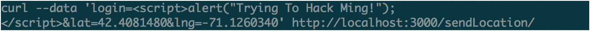
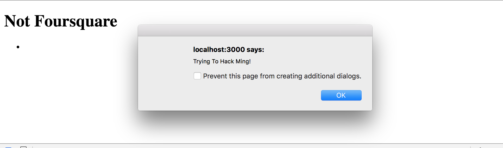
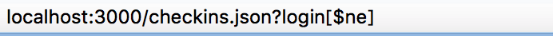
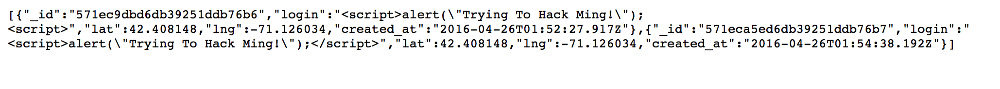
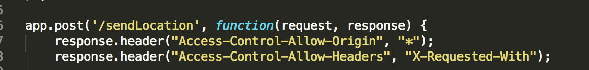

This is an assessment of the security of Assignment 3 developed by Ming Chow. His program is a server-side MongoDB GET/POST application that I run on localhost that supports location checkins involving user inputted login, latitude, and longitude information; and allows the client to search the database for all location checkins for a queried login name. In what follows I will assess the many security vulnerabilities that exist in this application and discuss their causes and implications.
I used CURL to "black box" test Ming Chow's application while running it on localhost before reading his source code extensively and moving on to "white box" test my local copy of the application after I found a few places where security breaches could be made.
Many security flaws I found in Ming's web application were related to user/client input and could be prevented by sanatizing that input. I realized in doing this exercise how many ways bad user input can work to hack a program and create serious security threats.
Location: /sendLocation POST API
Severity: High! Ming's web application could be broken down using any combination of javascript functions due to a huge hole that allows a hacker the ability to change or manipulate the webpage byway of an insecure HTML element.
To identify this problem, I posted data using "curl" from my workstation to the server that contained javascript embedded into the "login" field. The specific command I used was:
And the result was...

This issue can be resolved by checking and sanitizing user input to disallow the insertion of code that may contain css/html/javascript. This can be handled by certain NodeJS plugins or byway of changing the way html tags are encoded such that they are processed as strings "ampersand lt and ampersand gt".
Location: /checkins.json GET API
Severity: Medium. I was able to have the API return user location information with the provision of a user login. I was able to pass it the parameter "ne" and the resulting server response displayed the location information of all the users. If this location information was more sensitive data, this security vulnerability has pretty huge consequences.  
To prevent this issue the solution would be to check URL parameters for valid input before inserting them and by removing all special characters from the parameter string.
Location: Any of the GET APIS
Severity: Medium. I thought about this issue after exploring the source code a bit more but having CORS * accessibility in the manner that Ming does would be potentially threatening if this were a live application that held important personal user data because this practically allows for any domain to have access to the resources contained in the GET and POST APIs.
The part of Ming's code I'm referring to is

It is a potential security threat to allow all websites access to these APIs and would be a better and more secure programming practice to only allow certain specified sites to access the APIs in the future.
There are many potential security threats that exist in web programming. By taking thoughtful steps as a programmer anticiapting bad user input or potential hackers, you can significantly tighten the security of this web application and guarantee more protection of your clients and their information. Adding login verification, specifying which sites have access to the API calls and sanitizing code are three huge programming decisions that can be used to tighten the security in Assignment 3.